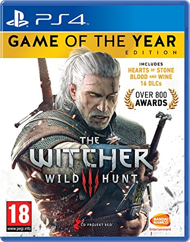
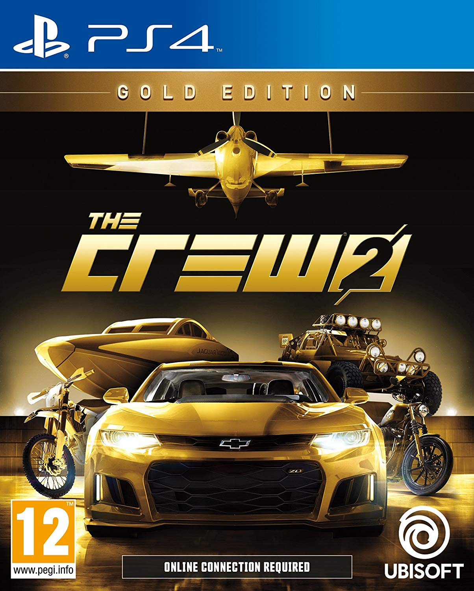
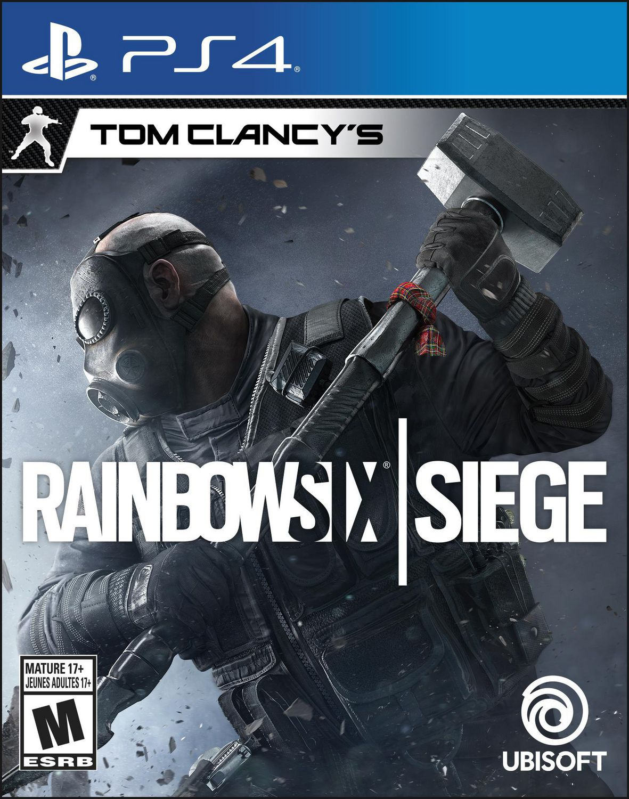
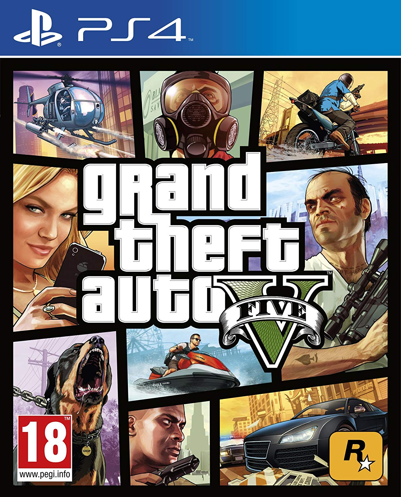
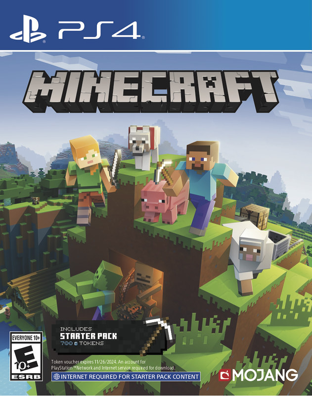
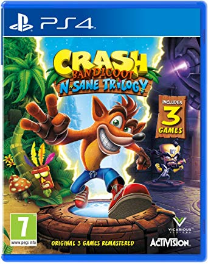
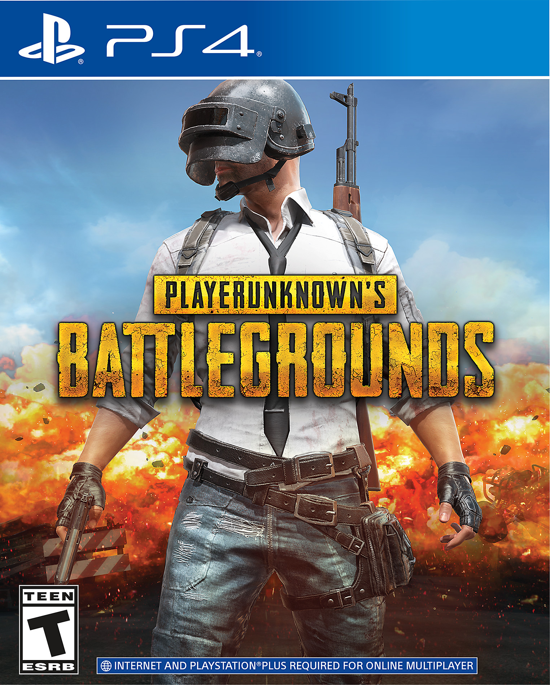
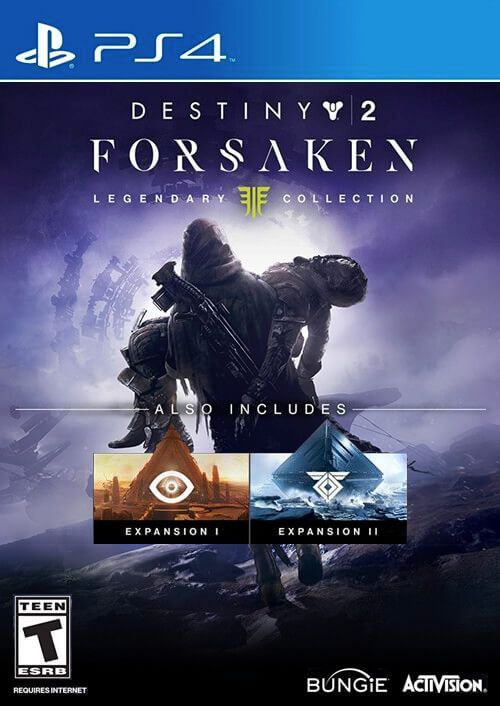

Witcher 3
Price:£19.99
The game tells the story of Geralt of Rivia,
a witcher a genetically enhanced human with special powers trained to slay monsters.
The witchers and sorceress Triss Merigold battle the invaders, but the mage Azar Javed
and the assassin Professor escape with the mutagenic potions that genetically alter the witchers.

The Crew 2
£46.99
The Crew 2 is an open world racing video game developed by Ivory Tower and published by Ubisoft for Microsoft Windows,
PlayStation 4 and Xbox One. It is the sequel to 2014's The Crew.
It features a persistent open world environment for free-roaming across a scaled-down recreation of the United States.

Rainbow Six Siege
£7.99
Inspired by the reality of counter-terrorist operatives across the world,
Rainbow Six Siege invites players to master the art of destruction. Intense close-quarters confrontations,
high lethality, tactics, team play, and explosive action are at the centre of the experience.

Grand Theft Auto 5
£12.99
GTA V on PS4 is an astoundingly good version of an immersive game.
“Grand Theft Auto V” is an action-adventure videogame about urban criminal gangsters,
and can be played from either a first-person or third-person perspective.

Minecraft
£15.99
The game is similar to PlayStation 3 Edition, but supports the enhancements offered by the PlayStation 4
(increased view distance, Small, Medium and Large worlds and DualShock 4 touchpad support).
Worlds made on PlayStation 3 and PlayStation Vita editions can also be transferred onto this edition.
This allows players to expand the world size of a classic sized world (one map).

Crash Bandicoot
£30.99
In the original Crash Bandicoot, Crash's move-set is rather limited; he can run,
jump and spin his way through treacherous environments and hostile creatures.
Cortex Strikes Back introduces several new moves for Crash to utilize,
including a high jump, high spin jump, body slam and slide attack.
Warped expands on this by awarding the player with new abilities after each boss is defeated,
which was carried over to The Wrath of Cortex. The player can also spin and slide at the same time when pressing the right buttons.

Players Unkown Battlegrounds
£38.99
Battlegrounds is a player versus player shooter game in which up to one hundred players fight in a battle royale,
a type of large-scale last man standing deathmatch where players fight to remain the last alive.
Players can choose to enter the match solo, duo, or with a small team of up to four people.

Destiny 2
£29.99
Destiny 2 is a free-to-play online-only multiplayer first-person shooter video game developed by Bungie.
It was released for PlayStation 4 and Xbox One on September 6, 2017, followed by a Microsoft Windows version the following month.